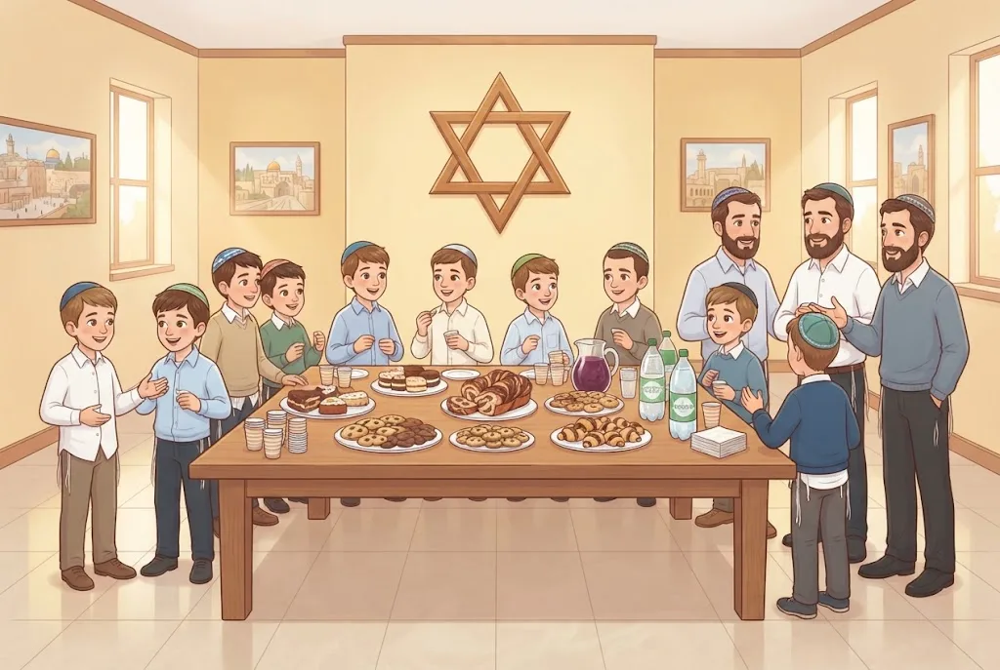
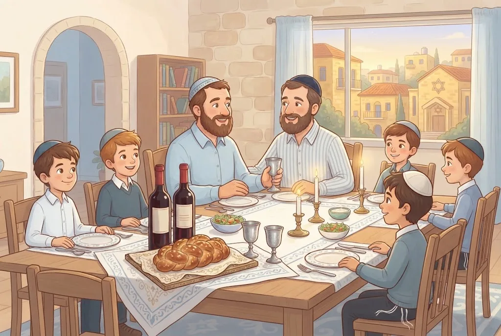

🍇יַיִן – שִׂמְחָה שֶׁל קְדֻשָּׁה
עַל כּוֹס יַיִן עוֹשִׂים קִדּוּשׁ וְהַבְדָּלָה, וּמְבָרְכִים בִּבְרִית מִילָה וּבַחֲתֻנָּה – כְּדֵי שֶׁהַשִּׂמְחָה שֶׁל הַנְּשָׁמָה תְּלֻוֶּה בְּשִׂמְחָה שֶׁל הַגּוּף. אֲבָל מִי שֶׁשּׁוֹתֶה הַרְבֵּה מְאַבֵּד אֶת דַּעְתּוֹ – וּכְבָר נֹחַ נִכְשַׁל בִּגְלַל הַיַּיִן.
חֲכָמִים הִזְהִירוּ שֶׁלֹּא לְהַרְבּוֹת בְּיַיִן. תַּלְמִיד חָכָם שׁוֹתֶה בְּמִדָּה – וְהַיַּיִן מוֹסִיף לוֹ שִׂמְחָה בַּעֲבוֹדַת ה׳.
💛 אַהֲבַת הַשֵּׁם: ה׳ לֹא רוֹצֶה שֶׁנִּהְיֶה עֲצוּבִים כְּדֵי לִהְיוֹת קְדוֹשִׁים – הוּא רוֹצֶה שֶׁנִּשְׂמַח לְפָנָיו, בַּנֶּפֶשׁ וּבַגּוּף. אֲבָל שִׂמְחָה אֲמִתִּית הִיא שִׂמְחָה שֶׁשּׁוֹמֶרֶת עַל הַדַּעַת וְעַל הַקְּדֻשָּׁה.
🍇בּוֹרֵא פְּרִי הַגֶּפֶן
עַל עֲנָבִים מְבָרְכִים "הָעֵץ", וְעַל מִיץ תַּפּוּזִים – "שֶׁהַכֹּל". אֲבָל עַל הַיַּיִן, שֶׁמַּזִּין וּמְשַׂמֵּחַ, תִּקְּנוּ חֲכָמִים בְּרָכָה מְיֻחֶדֶת: "בּוֹרֵא פְּרִי הַגֶּפֶן".
גַּם עַל מִיץ עֲנָבִים מְבָרְכִים "הַגֶּפֶן" – כִּי גַּם הוּא יוֹצֵא מִפְּרִי הַגֶּפֶן. וְאַחֲרָיו (כְּשֶׁשּׁוֹתִים רְבִיעִית) – "עַל הַגֶּפֶן".
💛 אַהֲבַת הַשֵּׁם: מִיץ הָעֲנָבִים שֶׁבַּקִּדּוּשׁ זוֹכֶה לַבְּרָכָה הַחֲשׁוּבָה שֶׁל הַיַּיִן. כָּךְ גַּם הַגּוּף שֶׁלָּנוּ מִשְׁתַּתֵּף בְּשִׂמְחַת הַשַּׁבָּת וְהַחַג, לִפְנֵי ה׳.
🍷יַיִן בְּתוֹךְ הַסְּעוּדָה
בִּרְכַּת "הַמּוֹצִיא" פּוֹטֶרֶת אֶת כָּל הַמַּאֲכָלִים וְהַמַּשְׁקִים שֶׁבַּסְּעוּדָה – חוּץ מִן הַיַּיִן. בִּגְלַל חֲשִׁיבוּתוֹ, מִי שֶׁשּׁוֹתֶה יַיִן אוֹ מִיץ עֲנָבִים בַּסְּעוּדָה מְבָרֵךְ עָלָיו "הַגֶּפֶן".
אֲבָל בַּסּוֹף לֹא אוֹמְרִים "עַל הַגֶּפֶן": בִּרְכַּת הַמָּזוֹן פּוֹטֶרֶת גַּם אֶת הַיַּיִן.
💛 אַהֲבַת הַשֵּׁם: הַיַּיִן אֵינוֹ "טָפֵל" לְשׁוּם דָּבָר, כִּי הוּא מֵבִיא שִׂמְחָה. ה׳ רוֹצֶה שֶׁנַּעֲצֹר וּנְבָרֵךְ גַּם עַל הַשִּׂמְחָה, וְלֹא רַק עַל הַשֹּׂבַע.
🥤הַגֶּפֶן פּוֹטֶרֶת אֶת כָּל הַמַּשְׁקִים
כְּמוֹ שֶׁהַלֶּחֶם רֹאשׁ לְכָל הַמַּאֲכָלִים, כָּךְ הַיַּיִן רֹאשׁ לְכָל הַמַּשְׁקִים. מִי שֶׁבֵּרַךְ "הַגֶּפֶן" וְשָׁתָה – אֵינוֹ מְבָרֵךְ עַל שְׁאָר הַמַּשְׁקִים שֶׁלְּפָנָיו אוֹ שֶׁחָשַׁב לִשְׁתּוֹת.
לָכֵן בַּקִּדּוּשׁ שֶׁבְּבֵית הַכְּנֶסֶת, מִי שֶׁשָּׁתָה מִן הַיַּיִן אוֹ מִמִּיץ הָעֲנָבִים – אֵינוֹ מְבָרֵךְ שׁוּב עַל שְׁאָר הַשְּׁתִיָּה.
💛 אַהֲבַת הַשֵּׁם: כְּשֶׁמַּתְחִילִים בַּבְּרָכָה הַחֲשׁוּבָה, הִיא מְלַוָּה אֶת כָּל מָה שֶׁבָּא אַחֲרֶיהָ. כָּךְ גַּם יוֹם שֶׁנִּפְתָּח בְּתוֹדָה לַה׳ – כֻּלּוֹ מְבֹרָךְ.
🥂״הַטּוֹב וְהַמֵּטִיב״ עַל יַיִן נוֹסָף
כְּשֶׁשּׁוֹתִים יַיִן, וְאַחַר כָּךְ מְבִיאִים סוּג אַחֵר שֶׁל יַיִן, מְבָרְכִים עָלָיו "הַטּוֹב וְהַמֵּטִיב" – תּוֹדָה עַל רִבּוּי הַיַּיִן. עַל לֶחֶם נוֹסָף אוֹ עַל בָּשָׂר נוֹסָף אֵין בְּרָכָה כָּזוֹ.
מְבָרְכִים רַק כְּשֶׁשְּׁנַיִם לְפָחוֹת שׁוֹתִים יַחַד – "הַטּוֹב" לוֹ "וְהַמֵּטִיב" לַחֲבֵרוֹ. וְלֹא מְבָרְכִים אִם הֵבִיאוּ אֶת הַיַּיִן הַשֵּׁנִי רַק כִּי הָרִאשׁוֹן נִגְמַר.
💛 אַהֲבַת הַשֵּׁם: שִׂמְחָה אֲמִתִּית הִיא שִׂמְחָה שֶׁל שִׁתּוּף, לֹא שֶׁל אֶחָד לְבַד. כְּשֶׁאֲנַחְנוּ שְׂמֵחִים יַחַד וּמוֹדִים לַה׳, הַשִּׂמְחָה נַעֲשֵׂית קְדֻשָּׁה.
🧠 בְּדֹק אֶת עַצְמְךָ
בְּאֶמְצַע הַסְּעוּדָה, אַחֲרֵי שֶׁבֵּרַךְ "הַמּוֹצִיא", מָזַג יְהוֹנָתָן כּוֹס מִיץ עֲנָבִים. מָה יַעֲשֶׂה?
💡 יַיִן וּמִיץ עֲנָבִים חֲשׁוּבִים, וְאֵינָם נַעֲשִׂים טְפֵלִים לַלֶּחֶם – לָכֵן מְבָרְכִים עֲלֵיהֶם "הַגֶּפֶן". וּבַסּוֹף בִּרְכַּת הַמָּזוֹן פּוֹטֶרֶת גַּם אוֹתָם, וְאֵין צֹרֶךְ "עַל הַגֶּפֶן".
בַּקִּדּוּשׁ שֶׁבְּבֵית הַכְּנֶסֶת שָׁמַע אִתַּי אֶת הַקִּדּוּשׁ, אֲבָל לֹא טָעַם מִכּוֹס הַקִּדּוּשׁ. עַכְשָׁו הוּא רוֹצֶה מִיץ תַּפּוּזִים. מָה הַדִּין?

💡 הַקִּדּוּשׁ פּוֹטֵר אֶת הַמַּשְׁקִים רַק לְמִי שֶׁשָּׁתָה מִן הַיַּיִן. אִתַּי יָצָא יְדֵי קִדּוּשׁ בַּשְּׁמִיעָה, אֲבָל הַמִּיץ אֵינוֹ טָפֵל לְיַיִן שֶׁלֹּא שָׁתָה – וְלָכֵן מְבָרֵךְ "שֶׁהַכֹּל".
לָמָּה תִּקְּנוּ "הַטּוֹב וְהַמֵּטִיב" רַק עַל סוּג נוֹסָף שֶׁל יַיִן, וְלֹא עַל סוּג נוֹסָף שֶׁל לֶחֶם?

💡 הַיַּיִן גַּם מַזִּין וְגַם מְשַׂמֵּחַ, וּלְכָל יַיִן אֹפִי מִשֶּׁלּוֹ. כְּשֶׁשּׁוֹתִים יַחַד עוֹד סוּג – הַשִּׂמְחָה גְּדֵלָה, וּמוֹדִים לַה׳ עַל הָרִבּוּי. הַיַּיִן הַשֵּׁנִי אֵינוֹ צָרִיךְ לִהְיוֹת מְשֻׁבָּח יוֹתֵר – רַק שׁוֹנֶה.
📚 עוֹד חָמְרֵי לִמּוּד עַל הֲלָכָה – חִנָּם, בַּמַּאֲגָר הַקּוֹל הַחֲמִישִׁי:
kol-toda.co.il/halacha
הַמַּאֲגָר הַמָּלֵא: kol-toda.co.il
הַמַּאֲגָר הַמָּלֵא: kol-toda.co.il